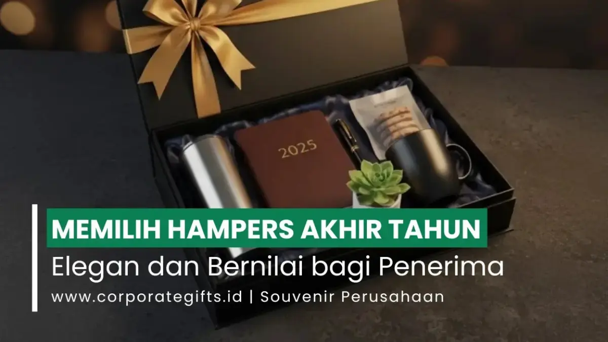

Corporate Gifts ID - Cara memilih hampers akhir tahun yang tepat adalah menyesuaikan isi produk dengan profil penerima, menetapkan alokasi anggaran sejak awal, memilih kemasan elegan yang selaras dengan citra brand, serta menyematkan personalisasi seperti logo perusahaan dan kartu ucapan terima kasih. Hampers eksklusif perusahaan yang berkesan memadukan mutu produk terbaik, estetika visual yang memikat, dan ketulusan apresiasi kemitraan.
Poin Kunci Memilih Hampers Akhir Tahun:
- Segmentasi Penerima: Bedakan kurasi isi hampers untuk klien VIP, tim internal, serta mitra personal guna memaksimalkan relevansi apresiasi.
- Harmoni Visual & Kemasan: Gunakan hardbox magnetik, kotak kayu pinus, atau keranjang anyam modern dengan aksen pita satin senada warna brand.
- Kualitas & Legalitas Produk: Pastikan seluruh produk makanan/minuman memiliki izin edar BPOM, sertifikasi halal, dan masa kedaluwarsa aman minimal 6-12 bulan.
- Personalisasi Eksklusif: Sematkan kartu ucapan bernas berlogo foil emas/perak serta grafir identitas korporat yang elegan dan tidak berlebihan.
Akhir tahun adalah momentum istimewa bagi dunia usaha untuk menunjukkan rasa terima kasih dan apresiasi yang tulus kepada klien setia, mitra strategis, serta seluruh karyawan. Namun, memilih cinderamata akhir tahun bukan sekadar perihal harga mahal atau tampilan pembungkus yang glamor. Dibutuhkan perencanaan matang dan strategi kurasi agar bingkisan yang dikirimkan benar-benar memberi manfaat fungsional, bernilai emosional, dan mencerminkan kelas bisnis Anda.
Langkah Cepat Memilih Hampers Akhir Tahun
Bagi manajer HRD, procurement, atau tim marketing yang sedang merancang pengadaan bingkisan korporat, berikut intisari alur kerja cepat yang dapat langsung diterapkan:
- Kenali Profil dan Karakter Penerima: Pilah daftar penerima ke dalam segmen eksekutif VIP, klien reguler, karyawan, atau keluarga rekanan.
- Tentukan Konsep Tema dan Gaya Kemasan: Pilih antara konsep luxury modern, eco-friendly sustainability, atau festive celebration yang merepresentasikan identitas brand.
- Tetapkan Anggaran per Kategori: Buat batasan biaya per paket secara rasional agar alokasi belanja perusahaan tetap efisien dan terkontrol.
- Kurasi Isi Produk yang Bermutu dan Relevan: Pilih komoditas konsumsi yang aman, produk artisan lokal unggulan, atau barang fungsional penunjang gaya hidup kerja.
- Tambahkan Sentuhan Personalisasi Elegan: Pasang logo perusahaan secara proporsional, sertakan pita aksen, dan tulis pesan apresiasi personal.
Mengapa Pemilihan Hampers Akhir Tahun Begitu Penting
Hampers korporat bukan sekadar bingkisan seremonial tahunan. Bagi perusahaan modern, hampers merupakan media komunikasi non-verbal strategis yang mencerminkan etos kerja, profesionalitas, serta komitmen terhadap relasi jangka panjang.
Pemberian hampers eksklusif perusahaan mampu meningkatkan persepsi positif mitra bisnis, memperkuat ikatan kemitraan menghadapi tantangan tahun mendatang, serta membangkitkan rasa memiliki () di kalangan tim internal. Mengabaikan kualitas hampers berisiko memunculkan kesan seadanya (), yang justru dapat mereduksi citra profesional brand yang telah dibangun bertahun-tahun.
Langkah Awal: Pahami Profil dan Kategori Penerima
Kunci keberhasilan kurasi suvenir terletak pada relevansi hadiah bagi si penerima. Jangan menyamaratakan isi bingkisan untuk semua orang. Bagilah target penerima ke dalam tiga kelompok utama:
1. Hampers untuk Klien dan Relasi Bisnis VIP
Untuk jajaran dewan direksi, pimpinan institusi, dan klien strategis, hampers wajib memancarkan kemewahan yang bersahaja (). Produk makanan gourmet artisan, kopi single origin nusantara dalam kaleng kedap udara, teko keramik premium, atau merchandise kantor custom eksklusif berbahan kulit asli merupakan pilihan tepat. Pastikan kemasan menggunakan hardbox kokoh bermagnet atau kotak kayu pinus berukir logo etsa.
2. Hampers untuk Karyawan dan Tim Internal
Karyawan adalah motor penggerak utama pencapaian target perusahaan. Berikan bingkisan akhir tahun yang merayakan dedikasi dan kerja keras mereka. Kurasi isi yang berfokus pada kesejahteraan (), seperti tumbler termos stainless steel SUS 304, aromaterapi diffuser, lilin kedelai wangi, camilan sehat bebas gluten, atau voucher belanja akhir tahun yang sangat fungsional.
3. Hampers untuk Keluarga Mitra dan Komunitas Personal
Bagi rekanan personal, keluarga komisaris, atau komunitas binaan CSR, pilih paket bernuansa hangat dan ramah keluarga (). Pilihan terbaik mencakup kue kering klasik berkualitas butter impor, madu murni hutan tropis, set cangkir teh porselen, atau peralatan makan kayu ramah lingkungan yang aman dipakai bersama keluarga di rumah.

Detail penataan produk gourmet, wellness, dan perlengkapan premium dalam gift box akhir tahun korporat.
Menentukan Tema Visual dan Nilai Estetika Kemasan
Tampilan luar hampers adalah faktor penentu kesan pertama (). Kemasan yang indah memicu rasa antusiasme saat membukanya ().
Pilihlah palet warna dan gaya desain kemasan yang selaras dengan panduan identitas visual korporat Anda:
- Modern Minimalist: Kotak hardbox kaku bernuansa warna monokrom (hitam matte, abu-abu arang, atau putih gading) dengan pita satin abu-abu tipis dan hot print foil perak. Sangat cocok untuk industri teknologi, startup fintech, dan konsultan bisnis.
- Classic Luxury: Kotak kayu jati belanda atau pinus berpolitur halus, disempurnakan dengan kain beludru di bagian dalam serta aksen pita satin merah marun atau hijau emerald. Cocok untuk perbankan privat, korporasi tambang, dan firma hukum.
- Eco-Friendly Natural: Anyaman bambu besek modern, keranjang rotan lokal, atau tas goni (jute) ramah lingkungan berhias bunga kering edelweis budidaya. Pilihan favorit korporasi berorientasi ESG dan agribisnis.
Tabel Panduan Segmentasi dan Budget Hampers Akhir Tahun
Berikut matriks estimasi alokasi anggaran dan kurasi isi bingkisan akhir tahun berdasarkan segmen prioritas hubungan bisnis:
| Kategori Penerima | Rekomendasi Isi Produk | Pilihan Kemasan | Kisaran Anggaran / Paket | Waktu Pemesanan Ideal |
|---|---|---|---|---|
| Klien Utama & Dewan Direksi (VIP) | Gourmet Food Impor, Set Cangkir Keramik, Diffuser Kristal, Madu Hutan | Hardbox Magnetik Kulit PU / Kotak Kayu Pinus Etsa | Rp 500.000 - Rp 1.500.000+ | 6 - 8 Minggu Sebelum Acara |
| Klien Reguler & Mitra Vendor | Kue Kering Artisan, Tumbler Stainless 304, Kopi Single Origin Drip | Rigid Box Eksklusif dengan Pita Satin & Sleeve Custom | Rp 250.000 - Rp 500.000 | 4 - 6 Minggu Sebelum Acara |
| Karyawan & Tim Operasional | Wellness Kit, Camilan Sehat, Botol Minum Eco, Agenda Planner 2026 | Box Corrugated Kraft Cetak Full Color / Goodie Bag Kanvas | Rp 150.000 - Rp 300.000 | 3 - 5 Minggu Sebelum Acara |
| Keluarga Rekanan & CSR Komunitas | Paket Aneka Roti/Pastry, Madu Organik, Lilin Aromaterapi Ramah Anak | Keranjang Rotan Cantik / Besek Bambu Natural Berpita | Rp 175.000 - Rp 350.000 | 3 - 4 Minggu Sebelum Acara |
Menyesuaikan Anggaran dengan Nilai Simbolik Hadiah
Hampers yang mahal tidak otomatis memberikan kesan paling mendalam. Kunci efisiensi anggaran pengadaan terletak pada harmoni penataan, integritas rasa, dan keunikan produk yang dipilih.
Pertimbangkan hal-hal teknis berikut saat menentukan alokasi belanja:
- Sertifikasi dan Keamanan Pangan: Produk makanan dan minuman wajib memiliki izin edar resmi BPOM/P-IRT serta sertifikasi halal aktif dari BPJPH. Jangan pernah menyertakan produk yang masa kedaluwarsanya kurang dari 6 bulan ke depan.
- Biaya Pengemasan Aman (): Jika hampers didistribusikan ke luar kota menggunakan ekspedisi kargo, alokasikan anggaran untuk perlindungan ekstra seperti bubble wrap tebal, sekat busa eva penahan benturan botol kaca, serta kardus luar pelindung ().
- Waktu Pemesanan Lebih Awal: Melakukan pemesanan 1 hingga 2 bulan sebelum momen puncak Desember menghindarkan Anda dari lonjakan tarif bahan baku musiman, kehabisan stok stoples/kemasan impor, serta keterlambatan antrean produksi di vendor.
Personalisasi dan Strategi Branding pada Hampers Korporat
Personalisasi adalah jembatan yang mengubah hadiah biasa menjadi instrumen penguat reputasi merek (). Namun, branding pada suvenir akhir tahun harus diterapkan secara cerdas dan berkelas:
Logo yang Halus dan Presisi: Hindari mencetak logo korporat berukuran raksasa di bagian tengah wadah yang membuat bingkisan tampak seperti brosur promosi jualan. Gunakan teknik hot stamping foil emas/perak berukuran kompak di sudut kotak, atau grafir halus di atas lempengan akrilik/kayu penutup.
Kartu Ucapan Personalisasi Nama: Sisipkan kartu ucapan eksklusif berbahan kertas tebal bertekstur (seperti linen atau fedrigoni). Tulis nama penerima secara spesifik disertai kalimat ucapan terima kasih yang tulus atas kolaborasi sepanjang tahun, bukan sekadar cetakan teks massal tanpa nama.
Kesalahan Umum Saat Memilih Hampers Akhir Tahun
Untuk memastikan investasi cinderamata perusahaan Anda berhasil sempurna, hindari empat kesalahan umum berikut:
- Terlalu Terpaku pada Ukuran Fisik Kemasan: Kotak berukuran sangat besar namun berisi produk murah yang renggang di dalamnya justru meninggalkan kesan manipulatif. Kotak kompak dengan isi padat dan berkualitas jauh lebih diapresiasi.
- Mengabaikan Preferensi dan Pantangan Penerima: Hindari menyertakan makanan beralkohol atau berbahan daging non-halal jika daftar penerima Anda majemuk. Kurasi netral seperti kopi, teh herbal, madu, dan kue kering mentega selalu menjadi opsi teraman.
- Pemesanan Terlalu Dekat dengan Hari H: Memesan suvenir di pertengahan Desember berisiko tinggi terhadap keterlambatan pengiriman kurir akibat lonjakan ekspedisi nasional akhir tahun.
- Tanpa Quality Control Mandiri: Selalu minta foto dokumentasi hasil akhir perakitan atau sampel fisik unit pertama dari vendor sebelum pengiriman massal dilepas ke penerima.
Pertanyaan Seputar Hampers Akhir Tahun (FAQ)
Kesimpulan dan Rekomendasi
Memilih hampers akhir tahun yang elegan dan bernilai merupakan seni mengintegrasikan rasa terima kasih, keindahan estetika kemasan, serta strategi komunikasi citra korporat. Melalui pemahaman mendalam atas karakter penerima, penataan visual yang harmonis, kontrol anggaran yang cermat, dan sentuhan personalisasi yang santun, Anda dapat mempersembahkan hampers eksklusif perusahaan yang membekas manis di benak rekanan bisnis Anda.
Untuk mewujudkan paket hampers akhir tahun tanpa repot dengan preview mockup digital dan kurasi isi fleksibel, tim spesialis CorporateGifts.ID siap mendampingi kebutuhan pengadaan instansi Anda dengan garansi kualitas prima dan ketepatan waktu pengiriman ke seluruh Indonesia.